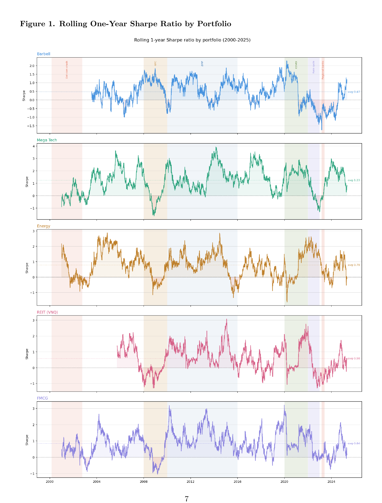
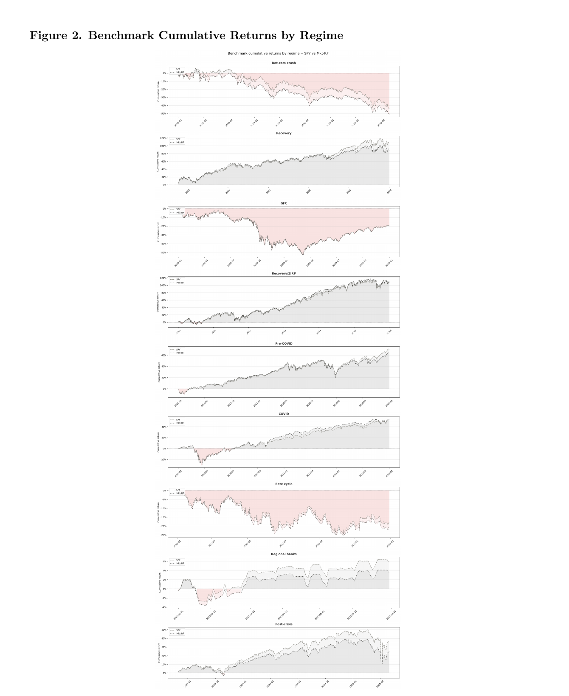
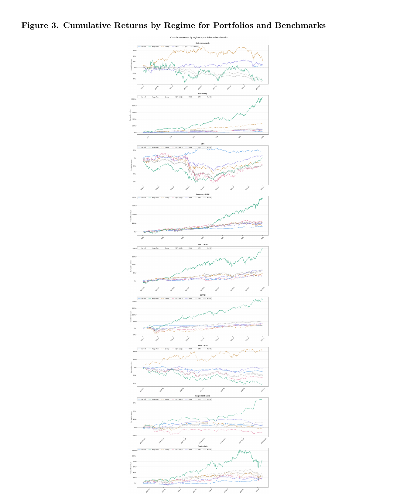

No portfolio in this study ranks first across all nine regimes. Mega-Cap Technology led during every expansion and recovery period tested but produced the steepest loss of any portfolio during the 2022 rate cycle. Energy did almost the opposite. The table and figures below carry the full regime-by-regime evidence.
| Portfolio | Sharpe | Sortino | Annualized return | |
|---|---|---|---|---|
| Dot-com crash | ||||
| Barbell* | 3.720 | 6.908 | 45.70% | |
| Mega Tech | -0.163 | -0.284 | -5.72% | |
| Energy | 0.272 | 0.414 | 10.10% | |
| REIT (VNQ) | N/A | N/A | N/A | |
| FMCG | 0.066 | 0.105 | 5.18% | |
| Recovery | ||||
| Barbell | 0.406 | 0.664 | 6.11% | |
| Mega Tech | 1.731 | 2.662 | 50.31% | |
| Energy | 1.448 | 2.183 | 26.79% | |
| REIT (VNQ) | 0.499 | 0.705 | 13.73% | |
| FMCG | 0.868 | 1.348 | 12.80% | |
| GFC | ||||
| Barbell | 0.577 | 1.057 | 7.88% | |
| Mega Tech | 0.202 | 0.299 | 9.37% | |
| Energy | 0.006 | 0.008 | 0.95% | |
| REIT (VNQ) | 0.187 | 0.279 | 13.58% | |
| FMCG | 0.190 | 0.259 | 5.25% | |
| Recovery / ZIRP | ||||
| Barbell | 0.817 | 1.504 | 8.58% | |
| Mega Tech | 1.289 | 1.901 | 28.74% | |
| Energy | 0.665 | 0.958 | 10.85% | |
| REIT (VNQ) | 0.772 | 1.026 | 15.47% | |
| FMCG | 1.060 | 1.515 | 12.17% | |
| Pre-COVID | ||||
| Barbell | 0.601 | 1.167 | 7.00% | |
| Mega Tech | 1.308 | 1.671 | 29.88% | |
| Energy | 0.684 | 1.014 | 10.63% | |
| REIT (VNQ) | 0.552 | 0.755 | 9.05% | |
| FMCG | 1.079 | 1.471 | 13.53% | |
| COVID | ||||
| Barbell | 0.802 | 1.552 | 8.90% | |
| Mega Tech | 1.833 | 2.162 | 63.10% | |
| Energy | 0.458 | 0.563 | 16.62% | |
| REIT (VNQ) | 0.620 | 0.663 | 19.68% | |
| FMCG | 0.916 | 1.133 | 18.41% | |
| 2022 Rate Cycle | ||||
| Barbell | -1.259 | -2.368 | -11.15% | |
| Mega Tech | -1.179 | -1.973 | -46.35% | |
| Energy | 1.484 | 2.230 | 39.60% | |
| REIT (VNQ) | -1.194 | -1.884 | -27.51% | |
| FMCG | -0.168 | -0.209 | -1.13% | |
| Regional Banking Stress | ||||
| Barbell | 0.482 | 0.930 | 11.43% | |
| Mega Tech | 4.397 | 11.928 | 117.08% | |
| Energy | -0.630 | -0.897 | -6.72% | |
| REIT (VNQ) | -1.211 | -1.720 | -21.00% | |
| FMCG | 0.381 | 0.563 | 8.88% | |
| Post-Crisis | ||||
| Barbell | 0.287 | 0.507 | 7.72% | |
| Mega Tech | 1.045 | 1.497 | 35.48% | |
| Energy | 0.490 | 0.661 | 13.56% | |
| REIT (VNQ) | 0.341 | 0.503 | 11.22% | |
| FMCG | 0.365 | 0.552 | 9.34% | |
* The Barbell Dot-com result uses only the portion of the regime for which IEF data are available and should not
be read as performance across the full 2000–2002 crash. REIT (VNQ) has no Dot-com result because VNQ did
not begin trading until 2004. Source: authors' calculations from the final portfolio return series in
SharpeRatioSheet.ipynb.



ARIMA was tested on portfolio-level daily return series using the Box–Jenkins framework and
statsmodels, not as a trading strategy but to check whether daily returns carried stable
autoregressive structure. They mostly didn't — forecasts converged toward zero and did not reveal
predictive structure strong enough to inform the resilience analysis. We report this as a useful null
result rather than a modeling failure: the project's evidence comes from historical backtesting,
risk-adjusted metrics, and regime-specific comparisons, not from forecasting.